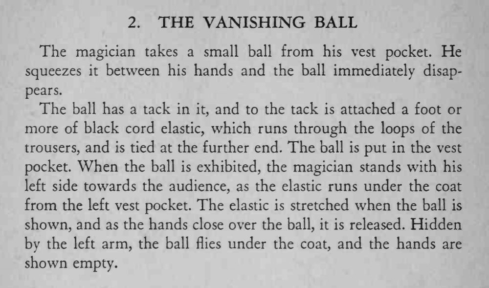

BALL TRICKS / 球类魔术 · 第 2 个魔术 · 原书 p.22
消失的球
THE VANISHING BALL
| 道具 | 小球（内嵌小钉）、黑色松紧绳 1 英尺以上 |
| 难度 | 入门 |
| 时长 | 1 分钟 |
| 场合 | 近景 / 立式 |
| 需托 | 否 |
效果
从马甲口袋取出一颗小球，双手一捏，球当场消失；摊开双手，空空如也。
方法
- 球里嵌一枚小钉，钉上系着一英尺以上的黑色松紧绳，绳子穿过裤腰的裤耳，末端固定在裤腰内侧。
- 球放在左侧马甲口袋。表演时把左肩朝向观众，让松紧绳从口袋经外套内侧垂下来。
- 展示球时绳子已经被拉紧；双手合拢把球盖住的瞬间松手，球就在左臂的遮挡下弹回外套里面。
- 摊开双手交代空掌，同时注意站姿，让绳子始终藏在身侧。
提示
观众只看到「捏一下就不见了」，真正起作用的是松紧绳的回弹与身体的遮挡。

The magician takes a small ball from his vest pocket. He squeezes it between his hands and the ball immediately disappears.
The ball has a tack in it, and to the tack is attached a foot or more of black cord elastic, which runs through the loops of the trousers, and is tied at the further end. The ball is put in the vest pocket. When the ball is exhibited, the magician stands with his left side towards the audience, as the elastic runs under the coat from the left vest pocket. The elastic is stretched when the ball is shown, and as the hands close over the ball, it is released. Hidden by the left arm, the ball flies under the coat, and the hands are shown empty.
BT-002 · 400 Tricks You Can Do · 中文重排版